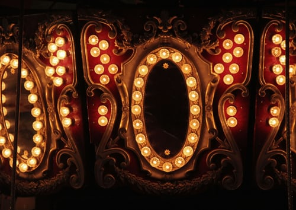
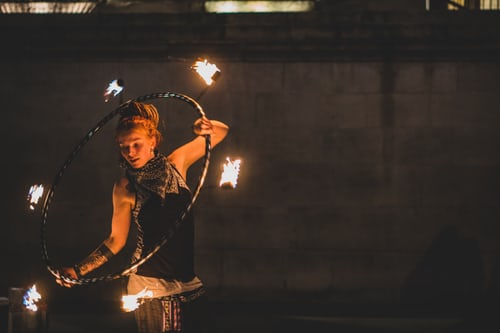
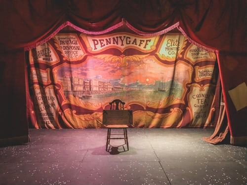

<header>
  <h1>Wild Circus</h1>
  <h2>Un cirque sans animaux, c'est encore plus magique.</h2>
</header>

<div class="main-container">
  <!-- Caroussel -->
  <div class="carousel-container">
    <div class="carousel slide" data-ride="carousel">
      <div class="carousel-inner">
        <div class="carousel-item active">
          
        </div>
        <div class="carousel-item">
          
        </div>
        <div class="carousel-item">
          
        </div>
      </div>
    </div>
  </div>

  <!-- Artistes -->
  <section>
    <h1>L'artiste du moment</h1>
    <div class="artist-moment">
      
      <h2> {{artistsByVote[0].name}} </h2>
    </div>
    <h2 class="presentation-artist">Et bien d'autres encores...</h2>
    <div class="artists">
      <div class="artist" *ngFor="let artist of artists">
        
        <h2> {{artist.name}} </h2>
      </div>
    </div>
  </section>

  <!-- Partie CTA -->
  <div class="cta">
    <iframe src="https://www.youtube.com/embed/T3puuS05pzg" frameborder="0" allow="accelerometer;
      autoplay; encrypted-media; gyroscope;
      picture-in-picture" allowfullscreen>
    </iframe>
    <div>
      <a mat-raised-button>Réservez maintenant</a>
    </div>
  </div>

  <!-- Partie pétition -->
  <div class="petition">
    <h2>Signez notre pétition pour l'interdiction des animaux dans les cirques en France</h2>
    <div class="text-petition">
      <i class="far fa-file-alt"></i>
      <h3>Déjà signatures récoltées!</h3>
      <button mat-raised-button>Signez</button>
    </div>
  </div>

  <!-- partie Livre d'or -->
</div>
<!-- footer -->
